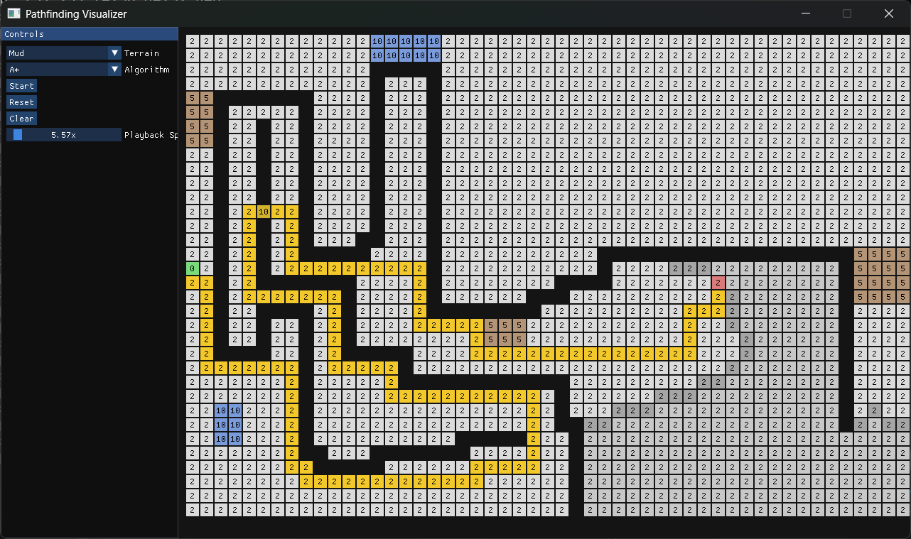
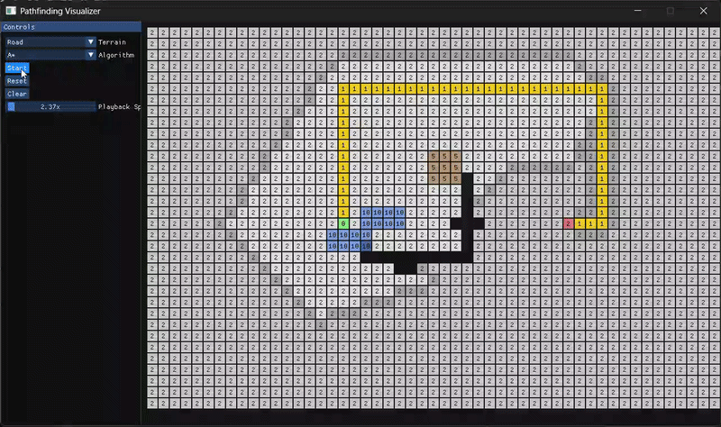
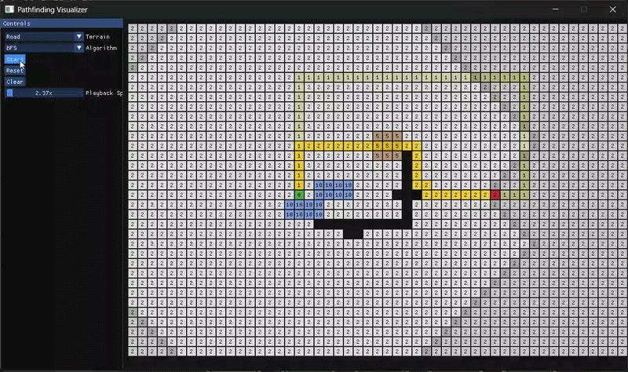
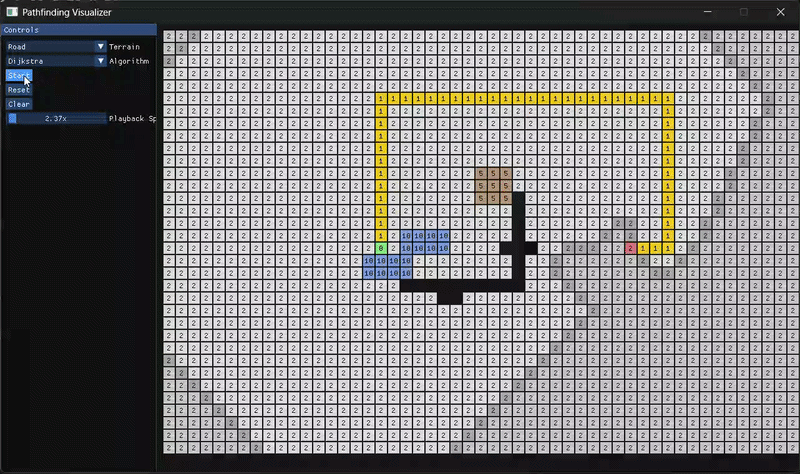

Pathfinding Visualizer

Overview
A simple C++ application currently a work in progress that visualizes grid-based pathfinding algorithms in real time, showing how different search methods explore nodes and build paths.
The visualizer currently supports A*, Breadth-First Search and Dijkstra, with a clear grid layout and step progression. It is designed to make algorithm behavior easy to compare and understand.
The grid is interactable, with weighted nodes that can be placed and removed. It has Mud(w=5), Water(w=10), Path(w=1) and Empty(w=2) normal nodes.
Gallery



Links